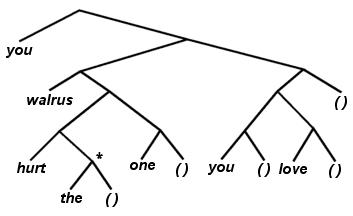

Contents | Lists as Trees | A Style of Programming
Our first version of RECITE removed the far left branch of the argument list [tree] with CAR and printed it. It then recursed [it called itself] passing the rest of the tree [the CDR] as the new tree. Unfortunately, if any of the branches were trees themselves, then they would simply be printed out as-is:
:(DEFINE (RECITE (LAMBDA (STUFF) : (COND : ((NULL STUFF) ()) : (T (PRINT (CAR STUFF)) : (RECITE (CDR STUFF))))))) :(RECITE '((WE THE PEOPLE) STAR (E PLENEBLA) TREK) (WE THE PEOPLE) STAR (E PLENEBLA) TREK NILHow can we get around this? The thing that should come to mind is that RECITE will work on any tree. Thus, if before RECITing the CDR of the list we make sure that all the subtrees in the CAR of the list have been RECITEd, we should be home free. No matter how deeply nested the main tree is, we will eventually get to its leaves by calling RECITE over and over again on deeper and deeper subtrees until we hit one whose CAR is an atom.
We will redefine RECITE with a COND as suggested by the previous description. We keep calling RECITE of the CAR [and the CDR] of the things that are entered until we hit an atom and then simply print out the atom! Would that give us the same result?
:(DEFINE (RECITE (LAMBDA (S) : (COND ((ATOM S) (PRINT S)) : (T (RECITE (CAR S)) : (RECITE (CDR S))))))) RECITE :(RECITE '(YOU (WALRUS (HURT THE) ONE) :((YOU) LOVE)))))) YOU WALRUS HURT THE NIL ONE NIL YOU NIL LOVE NIL NIL NILWhat happened? There are extra NILs in the way. Let's look at the input tree.
 (you (walrus (hurt the) one) ((you) love))When we finally print "the" [as indicated by the star ["*"] in the above picture], the CDR of STUFF is a NIL which qualifies as an atom, so it gets printed out also. Let's put in a test for NIL and simply do nothing when we encounter it:
:(DEFINE (RECITE (LAMBDA (THING) : (COND ((NULL THING) NIL) : ((ATOM THING) (PRINT THING)) : (T (RECITE (CAR THING)) : (RECITE (CDR THING))))))) RECITE :(RECITE '(YOU (WALRUS (HURT THE) ONE) :((YOU) LOVE)))))))) YOU WALRUS HURT THE ONE YOU LOVE NILOne of the important uses of recursion is tree searching. RECITE is an example of this method. By using the function recursively and passing smaller and smaller trees to the later calls, we can scan the entire main tree.